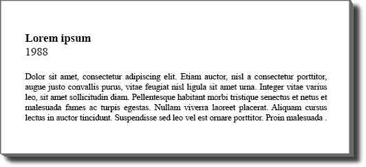

Advertisement
1950
A 1950 cover of
Print
Magazine.
Layout
1952
A collection of many brands and
types of typewriter.
Advertisement
1952
An advertisement for Cold-Type printing
by Ralph C. Coxhead Corporation.
Design
1953
Chiquita recipes and cookbook pages reflecting
a cultural obsession with bananas.
Illustration
1954
French colonial stamp designs.
Handlettering
1956
The step-by-step process of creating
hand-lettered type.
Design
1957
A collection of 1950's greeting cards.
Design
1957
Captured frames of animated movie title sequences.
Design
1958
Corporate logos of the 1950's.
Typography
1959
A playful narrative personifying letterforms.
Layout
1948
A
Print
spread dedicated to the
process of trademark design.
Layout
1959
An advertisement by Neenah Paper
Company of Kimberly-Clark.
 Advertisement
Advertisement